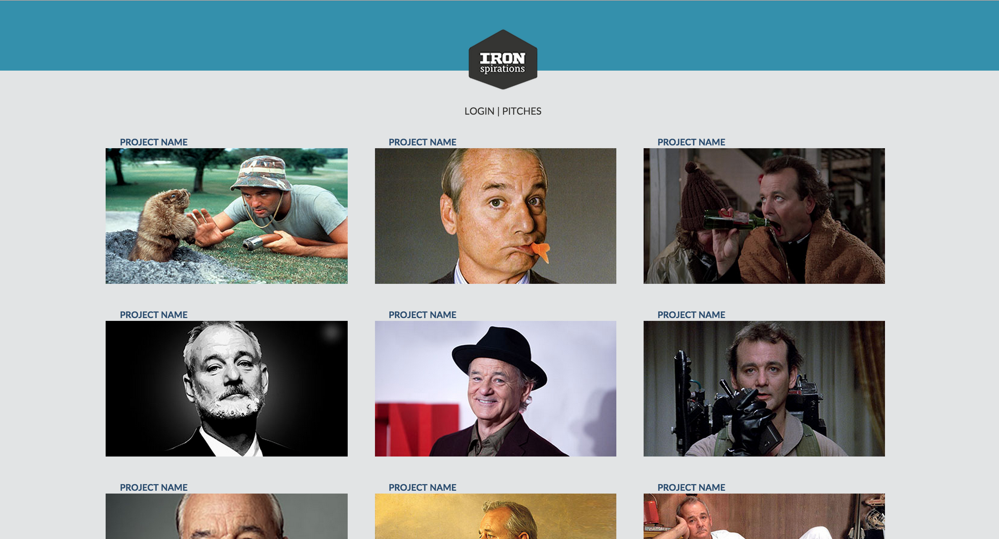
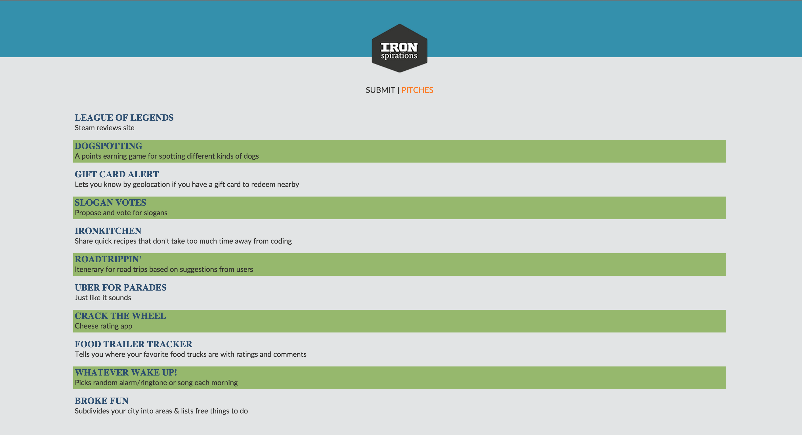
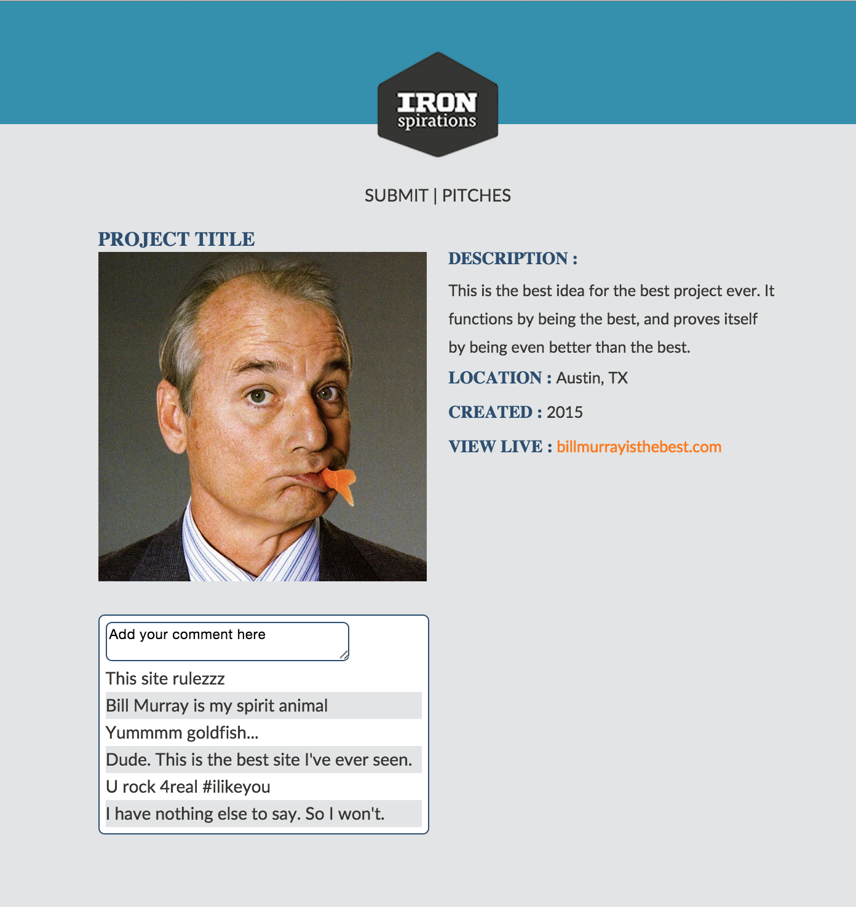
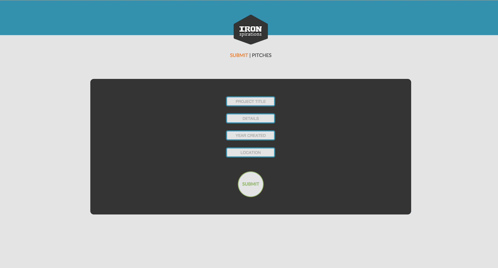

<div class="post-container">
	<div class="project">
		<h2>IRONSPIRATIONS</h2>
		<h4>View on <a href="https://github.com/vvj5/ironspiration">Github</a><h4>

		
		<h2>ABOUT THIS PROJECT</h2>
		<p>Ironspiration is an application where students of The Iron Yard can get ideas and inspiration from the past hackathon projects and pitches of previous TIY students.</p>
		<p>This project was created over a weekend-long hackathon and is built with entertaining photos of Bill Murray. We are in the process of collecting project photos from students across the nation to build a site for all campuses to contribute to.</p>
		<div class="list-container">
			<h4>Toolkit:</h4>
			<ul>
				<li>Research</li>
				<li>User Studies</li>
				<li>Sketching</li>
				<li>Wireframing</li>
				<li>Logo Development</li>
				<li>HTML</li>
				<li>CSS</li>
				<li>Agile Process</li>
				<li>Working on a team with developers</li>
				<li>Working with time constraints</li>
			</ul>
		</div>	
		
		
		


		<!-- 
		 -->

	</div>	
</div>
	
	
